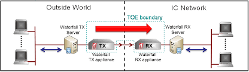
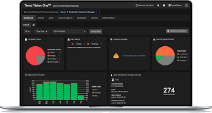
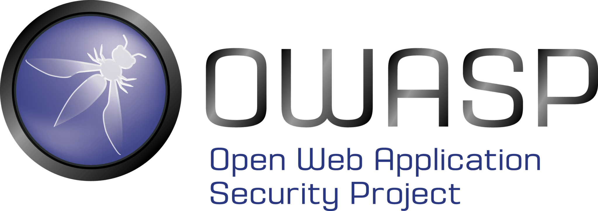
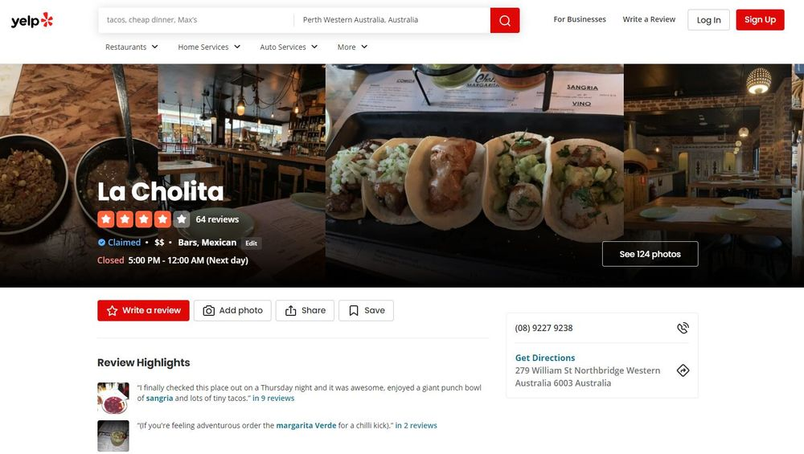
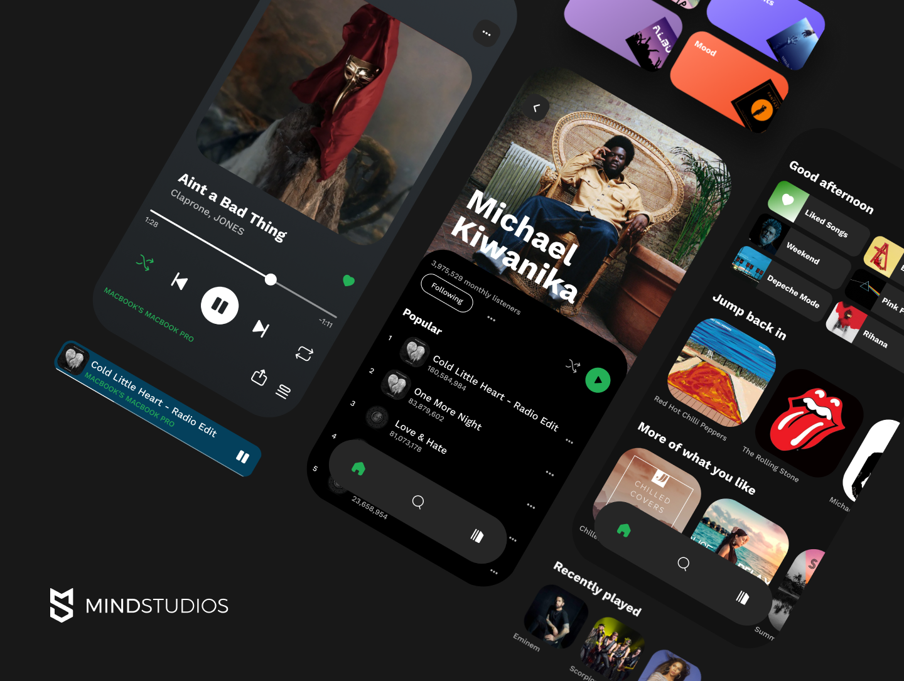

Security Operations Center (HT)

Client: Home Team (Ministry of Home Affairs)
I implemented Waterfall Data Diode to provide security while collecting logs from various Home Team Departments by
configuring of channels and stream agents for individual systems onboarding their logs to SOC. I also performed troubleshooting with invidual system’s engineers in case
there are missing logs.
Cloud Project (LTA)

Client: Land Transport Authority (Ministry of Transport)
I have implementined Trend Micro agents and sensors on all the servers in LTA cloud
environment and configured rufus API for malicous file scanning. I also engaged with network engineers when troubleshooting internet connectivty access to
reach Vision One SaaS Console.
Projects done during Bridging Module
Tic Tac Toe

I made this app for my bridging module CT1001 - Introduction to Computational Thinking and Programming. I create different variations of the Tic Tac Toe game such as single player with 3 Difficulty settings on 3x3 board and dual players on 3x3 and 4x4 board. I used Python as the programming language and Spyder as the IDE.
Take a LookProjects done during Diploma
Internet of Things Project

I made this mini IoT Setup for my diploma module Cloud Security. For the project, I had to create a secure IOT System using Docker and Mosquitto MQTT to connect Iot Sensors from IFTTT website to a python-based HTTP server that displays the data from sensors. I used IFTTT website (https://ifttt.com/) for IoT sensors, Mosquitto MQTT Broker in Python for the IoT Broker, python-based HTTP server to display to the IoT events, and Docker to containerise the different programs.
Pixel - Online Shopping Website

I made this 2-tier website for my diploma module Secure Web Applications. For the project, I had to create a secure Website with a relational database to allow the users to view, add, update, and delete their data, that is secured against OWASP Top 10 Web Application Security Risks. I used HTML, CSS, JavaScript, and PHP for the website design, PHP for better security than JavaScript and MySQL for the relational database.
Toppofood - Restaurant Review

I made this 2-tier website for my diploma modules Coding and Development Project, and Database Application Development. For the project, I had to create a Website with a relational database to allow the users to view, add, update, and delete their data. I used HTML, CSS, and JavaScript for the website design and MySQL for the relational database.
Music Streaming App

I made this app for my diploma module Computational Thinking. For the project, I had to create an android compatible music streaming app (with limited songs). I used Java as the programming language and Android Studio as the IDE.
Other Information
I have displayed my portfolio in the main page. On top of that, i have also included my non acedemic acheivements and activities.I hope my hobbies and other acheivements can interest you and prove my holistic development. Please click on the links below to find out more.
Thank you for taking interest to visit and thank you for your time. Have a fantastic day!